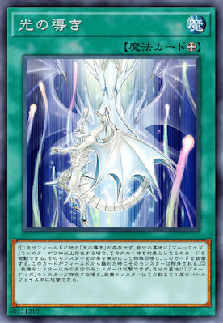
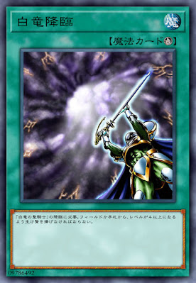

【主題牌組】「青眼」牌組介紹 ( ブルーアイズ| BLUE EYES | 青眼 )
青眼白龍為遊戲王DM海馬賴人所使用的王牌怪獸,系列主要有(融合/儀式)回殺跟同步定場,
由於出的早又是通常怪獸所以有不少搭配,堪稱K社親女兒的白龍幾乎每年都有強化。
本家卡片介紹－
《青眼白龍》
以高攻擊力自豪的傳說中的白龍。無論如何都能將對手粉碎，其破壞力不能計算。
以高攻擊力自豪的傳說中的白龍。無論如何都能將對手粉碎，其破壞力不能計算。
《青眼亞白龍》
此卡不能通常召喚。把手牌的1體「青眼白龍」給對手觀看可以特殊召喚。 此卡名做為此方法的特殊召喚1回合只能有1次。 ①：此卡的卡名只要在場上‧墓地存在就當作「青眼白龍」使用。 ②：1回合1次，以對方場上1體怪獸為對象才能發動。該怪獸破壞。此效果發動的整回合，此卡不能攻擊。
此卡不能通常召喚。把手牌的1體「青眼白龍」給對手觀看可以特殊召喚。 此卡名做為此方法的特殊召喚1回合只能有1次。 ①：此卡的卡名只要在場上‧墓地存在就當作「青眼白龍」使用。 ②：1回合1次，以對方場上1體怪獸為對象才能發動。該怪獸破壞。此效果發動的整回合，此卡不能攻擊。
《白色靈龍》
此卡在規則上也當作「青眼」。 ①：此卡於手牌﹒墓地存在，當作通常怪獸使用。 ②：此卡召喚‧特殊召喚成功時，以對方場上1張魔法﹒陷阱卡為對象才能發動。該卡除外。 ③：對方場上有怪獸存在的場合，把此卡解放才能發動。從手牌把1體「青眼白龍」特殊召喚。此效果在對方回合也能發動。
此卡在規則上也當作「青眼」。 ①：此卡於手牌﹒墓地存在，當作通常怪獸使用。 ②：此卡召喚‧特殊召喚成功時，以對方場上1張魔法﹒陷阱卡為對象才能發動。該卡除外。 ③：對方場上有怪獸存在的場合，把此卡解放才能發動。從手牌把1體「青眼白龍」特殊召喚。此效果在對方回合也能發動。
《深淵的青眼龍》
此卡名的①②③效果1回合各僅能使用1次。 我方場上﹒墓地沒有「青眼白龍」存在的場合不能把效果發動。 ①：此卡特殊召喚成功的場合才能發動。從牌組把1張儀式魔法卡或「融合」加入手牌。 ②：我方結束階段才能發動。從牌組把1體等級8以上的龍族怪獸加入手牌。 ③：把墓地的此卡除外才能發動。我方場上全部等級8以上的龍族怪獸攻擊力上升1000。
此卡名的①②③效果1回合各僅能使用1次。 我方場上﹒墓地沒有「青眼白龍」存在的場合不能把效果發動。 ①：此卡特殊召喚成功的場合才能發動。從牌組把1張儀式魔法卡或「融合」加入手牌。 ②：我方結束階段才能發動。從牌組把1體等級8以上的龍族怪獸加入手牌。 ③：把墓地的此卡除外才能發動。我方場上全部等級8以上的龍族怪獸攻擊力上升1000。
《青眼噴射龍》
此卡名的①③效果1回合各僅能使用1次。 我方場上或墓地有「青眼白龍」存在的場合才能把此卡效果發動。 ①：此卡於手牌﹒墓地存在，場上的卡被戰鬥﹒效果破壞的場合才能發動。此卡特殊召喚。 ②：此卡以外我方場上的卡不會被對方效果破壞。 ③：此卡進行戰鬥的傷害步驟開始時，以對方場上1張卡為對象才能發動。該卡回到原持有者手牌。
此卡名的①③效果1回合各僅能使用1次。 我方場上或墓地有「青眼白龍」存在的場合才能把此卡效果發動。 ①：此卡於手牌﹒墓地存在，場上的卡被戰鬥﹒效果破壞的場合才能發動。此卡特殊召喚。 ②：此卡以外我方場上的卡不會被對方效果破壞。 ③：此卡進行戰鬥的傷害步驟開始時，以對方場上1張卡為對象才能發動。該卡回到原持有者手牌。
《Sin 青眼白龍》
此卡不能通常召喚。 從牌組把1體「青眼白龍」除外的場合來特殊召喚。 ①：「Sin」怪獸在場上僅能有1體表側表示存在。 ②：此卡於怪獸區域存在，我方其他怪獸不能攻擊宣言。 ③：沒有場地魔法卡表側表示存在的場合，此卡破壞。
此卡不能通常召喚。 從牌組把1體「青眼白龍」除外的場合來特殊召喚。 ①：「Sin」怪獸在場上僅能有1體表側表示存在。 ②：此卡於怪獸區域存在，我方其他怪獸不能攻擊宣言。 ③：沒有場地魔法卡表側表示存在的場合，此卡破壞。

《青眼光龍》
此卡不能通常召喚。 把我方場上1體「青眼究極龍」解放的場合才能特殊召喚。 ①：此卡的攻擊力上升我方墓地的龍族怪獸數量×300。 ②：以此卡為對象的效果發動時才能發動。該效果無效。
此卡不能通常召喚。 把我方場上1體「青眼究極龍」解放的場合才能特殊召喚。 ①：此卡的攻擊力上升我方墓地的龍族怪獸數量×300。 ②：以此卡為對象的效果發動時才能發動。該效果無效。
《青眼全像龍》
此卡名①②效果1回合各能使用1次。 ①：此卡召喚﹒特殊召喚成功的場合，以對方場上1體表側表示的怪獸為對象才能發動。該怪獸效果無效化。 ②：對方把魔法﹒陷阱﹒怪獸的效果發動時才能發動。場上的此卡回到原持有者的牌組，從牌組把1體「青眼白龍」特殊召喚。
此卡名①②效果1回合各能使用1次。 ①：此卡召喚﹒特殊召喚成功的場合，以對方場上1體表側表示的怪獸為對象才能發動。該怪獸效果無效化。 ②：對方把魔法﹒陷阱﹒怪獸的效果發動時才能發動。場上的此卡回到原持有者的牌組，從牌組把1體「青眼白龍」特殊召喚。
《青眼卡通龍》
此卡不能通常召喚。 我方場上有「卡通世界」存在，把我方場上2體怪獸解放可以特殊召喚。 ①：此卡在特殊召喚的回合不能攻擊。 ②：此卡必須支付500生命值才能攻擊宣言。 ③：我方場上有「卡通世界」存在，對方場上沒有卡通怪獸的場合，此卡可以直接攻擊。有卡通怪獸的場合，必須選擇那些怪獸作為攻擊對象。 ④：場上的「卡通世界」破壞時此卡破壞。
此卡不能通常召喚。 我方場上有「卡通世界」存在，把我方場上2體怪獸解放可以特殊召喚。 ①：此卡在特殊召喚的回合不能攻擊。 ②：此卡必須支付500生命值才能攻擊宣言。 ③：我方場上有「卡通世界」存在，對方場上沒有卡通怪獸的場合，此卡可以直接攻擊。有卡通怪獸的場合，必須選擇那些怪獸作為攻擊對象。 ④：場上的「卡通世界」破壞時此卡破壞。

《青眼混沌﹒MAX﹒龍》
「混沌型態」降臨。 此卡僅能用儀式召喚特殊召喚。 ①：此卡不會成為對方卡片效果的對象，不會被對方卡片效果破壞。 ②：此卡向守備表示怪獸進行攻擊的場合，給予該攻擊力超過守備力的2倍數值的戰鬥傷害。
「混沌型態」降臨。 此卡僅能用儀式召喚特殊召喚。 ①：此卡不會成為對方卡片效果的對象，不會被對方卡片效果破壞。 ②：此卡向守備表示怪獸進行攻擊的場合，給予該攻擊力超過守備力的2倍數值的戰鬥傷害。
《青眼混沌龍》
「混沌型態」降臨。 此卡僅能用儀式召喚特殊召喚。 ①：此卡不會成為對方的效果對象，不會被對方的效果破壞。 ②：使用「青眼白龍」儀式召喚的此卡攻擊宣言時才能發動。對方場上全部怪獸的表示形式更變。受此效果影響更變形式的怪獸攻擊力‧守備力變成0。此回合，此卡攻擊守備表示怪獸的場合，給予攻擊力超過該守備力數值的戰鬥傷害。
「混沌型態」降臨。 此卡僅能用儀式召喚特殊召喚。 ①：此卡不會成為對方的效果對象，不會被對方的效果破壞。 ②：使用「青眼白龍」儀式召喚的此卡攻擊宣言時才能發動。對方場上全部怪獸的表示形式更變。受此效果影響更變形式的怪獸攻擊力‧守備力變成0。此回合，此卡攻擊守備表示怪獸的場合，給予攻擊力超過該守備力數值的戰鬥傷害。
《白龍的聖騎仕》
「白龍降臨」降臨。 ①：此卡攻擊裡側表示怪獸的傷害步驟開始時才能發動。該裡側守備表示怪獸破壞。 ②：把此卡解放才能發動。從手牌﹒牌組特殊召喚1體「青眼白龍」。此回合「青眼白龍」不能攻擊。
「白龍降臨」降臨。 ①：此卡攻擊裡側表示怪獸的傷害步驟開始時才能發動。該裡側守備表示怪獸破壞。 ②：把此卡解放才能發動。從手牌﹒牌組特殊召喚1體「青眼白龍」。此回合「青眼白龍」不能攻擊。
《淵眼白龍》
①：我方場上表側表示「青眼」怪獸被戰鬥或對方卡片效果破壞時才能發動。此卡從手牌特殊召喚，給予對方生命值為我方墓地龍族怪獸種類×600的傷害。 ②：此卡召喚﹒特殊召喚成功的場合以我方墓地1體龍族怪獸為對象發動。此卡的攻擊力變為和對象怪獸相同。 ③：場上的此卡被效果破壞的場合發動。對方場上的怪獸全部破壞。
①：我方場上表側表示「青眼」怪獸被戰鬥或對方卡片效果破壞時才能發動。此卡從手牌特殊召喚，給予對方生命值為我方墓地龍族怪獸種類×600的傷害。 ②：此卡召喚﹒特殊召喚成功的場合以我方墓地1體龍族怪獸為對象發動。此卡的攻擊力變為和對象怪獸相同。 ③：場上的此卡被效果破壞的場合發動。對方場上的怪獸全部破壞。
《龍之君主－龍的獨裁者－》
此卡名的①②效果1回合各僅能使用1次。 ①：從手牌﹒牌組把1體「青眼白龍」送去墓地才能發動。此卡從手牌特殊召喚。 ②：從手牌捨棄1體「青眼白龍」或1張有該卡名記述的卡，以我方墓地1體「青眼」怪獸為對象才能發動。該怪獸特殊召喚。 ③：我方場上有「青眼」怪獸存在，對方怪獸攻擊對象由我方選擇。
此卡名的①②效果1回合各僅能使用1次。 ①：從手牌﹒牌組把1體「青眼白龍」送去墓地才能發動。此卡從手牌特殊召喚。 ②：從手牌捨棄1體「青眼白龍」或1張有該卡名記述的卡，以我方墓地1體「青眼」怪獸為對象才能發動。該怪獸特殊召喚。 ③：我方場上有「青眼」怪獸存在，對方怪獸攻擊對象由我方選擇。
《正義的味方 海馬俠》
①：把此卡解放才能發動。從手牌把1體「青眼白龍」特殊召喚。
①：把此卡解放才能發動。從手牌把1體「青眼白龍」特殊召喚。
《太古的白石》
此卡名的②效果1回合僅能使用1次。 ①：此卡被送去墓地的回合結束階段才能發動。從牌組把1體「青眼」怪獸特殊召喚。 ②：把墓地的此卡除外，以我方墓地1體「青眼」怪獸為對象才能發動。該怪獸加入手牌。
此卡名的②效果1回合僅能使用1次。 ①：此卡被送去墓地的回合結束階段才能發動。從牌組把1體「青眼」怪獸特殊召喚。 ②：把墓地的此卡除外，以我方墓地1體「青眼」怪獸為對象才能發動。該怪獸加入手牌。
《傳說的白石》
「白龍降臨」降臨。 ①：此卡送入墓地的場合發動。從牌組把1體「青眼白龍」加入手牌。
「白龍降臨」降臨。 ①：此卡送入墓地的場合發動。從牌組把1體「青眼白龍」加入手牌。
《青之眼的少女》
此卡名的①②效果1回合僅能有1次使用其中任意1個。 ①：場上表側表示之此卡成為效果對象時才能發動。從我方手牌﹒牌組﹒墓地選擇1體「青眼白龍」特殊召喚。 ②：此卡被選擇作為攻擊對象時才能發動。該攻擊無效，此卡的表示形式變更。那之後，可以從我方手牌﹒牌組﹒墓地選擇1體「青眼白龍」特殊召喚。
此卡名的①②效果1回合僅能有1次使用其中任意1個。 ①：場上表側表示之此卡成為效果對象時才能發動。從我方手牌﹒牌組﹒墓地選擇1體「青眼白龍」特殊召喚。 ②：此卡被選擇作為攻擊對象時才能發動。該攻擊無效，此卡的表示形式變更。那之後，可以從我方手牌﹒牌組﹒墓地選擇1體「青眼白龍」特殊召喚。
《青之眼的賢士》
此卡名的②效果1回合僅能使用1次 。 ①：此卡召喚成功時才能發動。從牌組把此卡名以外的1體光屬性﹒等級1協調怪獸加入手牌。 ②：把此卡從手牌送入墓地，以我方場上1體效果怪獸為對象才能發動。該怪獸送去墓地，從牌組把1體「青眼」怪獸特殊召喚。
此卡名的②效果1回合僅能使用1次 。 ①：此卡召喚成功時才能發動。從牌組把此卡名以外的1體光屬性﹒等級1協調怪獸加入手牌。 ②：把此卡從手牌送入墓地，以我方場上1體效果怪獸為對象才能發動。該怪獸送去墓地，從牌組把1體「青眼」怪獸特殊召喚。
《青之眼的祭司》
此卡名的②效果1回合僅能使用1次。 ①：此卡召喚成功時，以我方墓地1體光屬性﹒等級1協調怪獸為對象才能發動。該怪獸加入手牌 。 ②：讓墓地的此卡回到牌組，以我方場上1體效果怪獸為對象才能發動。該怪獸送去墓地，從我方墓地選擇該怪獸以外的1體「青眼」怪獸特殊召喚。
此卡名的②效果1回合僅能使用1次。 ①：此卡召喚成功時，以我方墓地1體光屬性﹒等級1協調怪獸為對象才能發動。該怪獸加入手牌 。 ②：讓墓地的此卡回到牌組，以我方場上1體效果怪獸為對象才能發動。該怪獸送去墓地，從我方墓地選擇該怪獸以外的1體「青眼」怪獸特殊召喚。
《青之眼的護人》
此卡名的②效果1回合僅能使用1次。 ①：此卡召喚成功時才能發動。從手牌把1體光屬性﹒等級1協調怪獸特殊召喚。 ②：以我方場上1體效果怪獸為對象才能發動。該怪獸送去墓地，從手牌把1體「青眼」怪獸特殊召喚。
此卡名的②效果1回合僅能使用1次。 ①：此卡召喚成功時才能發動。從手牌把1體光屬性﹒等級1協調怪獸特殊召喚。 ②：以我方場上1體效果怪獸為對象才能發動。該怪獸送去墓地，從手牌把1體「青眼」怪獸特殊召喚。
《青之眼的巫女》
此卡名的①②效果1回合僅能有1次使用其中任意1個。 ①：場上的表側表示的此卡成為效果對象時才能發動。選我方場上1體效果怪獸送去墓地，從牌組把最多2體卡名相異的「青眼」怪獸加入手牌。 ②：此卡於墓地存在的場合，以我方場上1體「青眼」怪獸為對象才能發動。該怪獸回到原持有者牌組，此卡從墓地特殊召喚。
此卡名的①②效果1回合僅能有1次使用其中任意1個。 ①：場上的表側表示的此卡成為效果對象時才能發動。選我方場上1體效果怪獸送去墓地，從牌組把最多2體卡名相異的「青眼」怪獸加入手牌。 ②：此卡於墓地存在的場合，以我方場上1體「青眼」怪獸為對象才能發動。該怪獸回到原持有者牌組，此卡從墓地特殊召喚。
《青眼精靈龍》
協調 ＋ 協調以外的「青眼」怪獸一體以上 ①：此卡於怪獸區域存在，雙方不能把2體以上的怪獸同時特殊召喚。 ②：1回合1次，墓地的卡片效果發動時才能發動。該發動無效。 ③：把同步召喚的此卡解放才能發動。從額外牌組把此卡名以外的1體龍族﹒光屬性同步怪獸守備表示特殊召喚。該怪獸在回合的結束階段破壞。此效果在對方回合也能發動。
協調 ＋ 協調以外的「青眼」怪獸一體以上 ①：此卡於怪獸區域存在，雙方不能把2體以上的怪獸同時特殊召喚。 ②：1回合1次，墓地的卡片效果發動時才能發動。該發動無效。 ③：把同步召喚的此卡解放才能發動。從額外牌組把此卡名以外的1體龍族﹒光屬性同步怪獸守備表示特殊召喚。該怪獸在回合的結束階段破壞。此效果在對方回合也能發動。
《蒼眼銀龍》
協調＋協調以外通常怪獸一體以上 ①：此卡特殊召喚成功的場合發動。我方場上龍族怪獸直到下個回合結束時，不會成為卡的效果對象，也不會被卡的效果破壞。 ②：我方準備階段，以我方墓地1體通常怪獸為對象才能發動。該怪獸特殊召喚。
協調＋協調以外通常怪獸一體以上 ①：此卡特殊召喚成功的場合發動。我方場上龍族怪獸直到下個回合結束時，不會成為卡的效果對象，也不會被卡的效果破壞。 ②：我方準備階段，以我方墓地1體通常怪獸為對象才能發動。該怪獸特殊召喚。
《究極龍騎士》
「混沌士兵」＋「青眼究極龍」 此卡僅能用融合召喚特殊召喚。 ①：此卡的攻擊力上升此卡以外我方場上龍族怪獸數量×500。
「混沌士兵」＋「青眼究極龍」 此卡僅能用融合召喚特殊召喚。 ①：此卡的攻擊力上升此卡以外我方場上龍族怪獸數量×500。
《青眼究極亞龍》
「青眼白龍」＋「青眼白龍」＋「青眼白龍」 ①：場上的這張卡不會成為對方的卡片效果對象，不會被對方的效果破壞。 ②：1回合1次，以對方場上1張卡為對象才能發動。該卡破壞。此卡的融合素材中有原本卡名為「青眼亞白龍」的怪獸的場合，此效果的對象也可以是2張或3張卡。發動此效果的回合，此卡不能攻擊。
「青眼白龍」＋「青眼白龍」＋「青眼白龍」 ①：場上的這張卡不會成為對方的卡片效果對象，不會被對方的效果破壞。 ②：1回合1次，以對方場上1張卡為對象才能發動。該卡破壞。此卡的融合素材中有原本卡名為「青眼亞白龍」的怪獸的場合，此效果的對象也可以是2張或3張卡。發動此效果的回合，此卡不能攻擊。
《真青眼究極龍》
「青眼白龍」＋「青眼白龍」＋「青眼白龍」 此卡名的①效果1回合最多可以使用2次。 ①：融合召喚的此卡攻擊的傷害步驟結束時，我方場上表側表示的卡只有此卡的場合，從額外牌組把1體「青眼」融合怪獸送去墓地才能發動。此卡可以再度攻擊。 ②：以我方場上的「青眼」怪獸為對象的效果發動時，把墓地的此卡除外才能發動。該發動無效並破壞。
「青眼白龍」＋「青眼白龍」＋「青眼白龍」 此卡名的①效果1回合最多可以使用2次。 ①：融合召喚的此卡攻擊的傷害步驟結束時，我方場上表側表示的卡只有此卡的場合，從額外牌組把1體「青眼」融合怪獸送去墓地才能發動。此卡可以再度攻擊。 ②：以我方場上的「青眼」怪獸為對象的效果發動時，把墓地的此卡除外才能發動。該發動無效並破壞。
《青眼雙爆裂龍》
「青眼白龍」＋「青眼白龍」 此卡只能用融合召喚和以下的方法特殊召喚。 ●把我方的怪獸區域的上述卡片送去墓地才能從額外牌組特殊召喚（不需要「融合」）。 ①：此卡不會被戰鬥破壞。 ②：此卡在1次戰鬥階段中最多可以向怪獸攻擊2次。 ③：此卡的攻擊沒有破壞對手怪獸的傷害步驟結束時才能發動。該對手怪獸除外。
「青眼白龍」＋「青眼白龍」 此卡只能用融合召喚和以下的方法特殊召喚。 ●把我方的怪獸區域的上述卡片送去墓地才能從額外牌組特殊召喚（不需要「融合」）。 ①：此卡不會被戰鬥破壞。 ②：此卡在1次戰鬥階段中最多可以向怪獸攻擊2次。 ③：此卡的攻擊沒有破壞對手怪獸的傷害步驟結束時才能發動。該對手怪獸除外。
《青眼暴君龍》
「青眼白龍」＋龍族怪獸 此卡用融合召喚以及以下方法才能從額外牌組特殊召喚。 ●把有融合怪獸裝備的1體我方「青眼白龍」解放之場合可以從額外牌組特殊召喚。 ①：場上之此卡不受陷阱卡的效果影響。 ②：此卡可以向對方怪獸全部各作1次攻擊。 ③：1回合1次，此卡進行戰鬥的傷害步驟結束時，以我方墓地1張陷阱卡為對象才能發動。該卡在我方魔法與陷阱區域放置。
「青眼白龍」＋龍族怪獸 此卡用融合召喚以及以下方法才能從額外牌組特殊召喚。 ●把有融合怪獸裝備的1體我方「青眼白龍」解放之場合可以從額外牌組特殊召喚。 ①：場上之此卡不受陷阱卡的效果影響。 ②：此卡可以向對方怪獸全部各作1次攻擊。 ③：1回合1次，此卡進行戰鬥的傷害步驟結束時，以我方墓地1張陷阱卡為對象才能發動。該卡在我方魔法與陷阱區域放置。
《毀滅的爆裂疾風彈》
此卡發動的回合，「青眼白龍」不能攻擊。 ①：我方場上有「青眼白龍」存在的場合才能發動。對方場上所有怪獸破壞。
此卡發動的回合，「青眼白龍」不能攻擊。 ①：我方場上有「青眼白龍」存在的場合才能發動。對方場上所有怪獸破壞。
《究極融合》
此卡名的卡1回合僅能發動1張。 ①：我方﹒對方主要階段才能發動。從我方手牌﹒場上﹒墓地讓融合怪獸卡所決定的融合素材怪獸回到原持有者牌組，把以「青眼白龍」或「青眼究極龍」為融合素材的那1體融合怪獸從額外牌組特殊召喚。那之後，可以選擇最多有那些作為融合素材場上「青眼白龍」「青眼究極龍」數量之對方場上表側表示的卡破壞。
此卡名的卡1回合僅能發動1張。 ①：我方﹒對方主要階段才能發動。從我方手牌﹒場上﹒墓地讓融合怪獸卡所決定的融合素材怪獸回到原持有者牌組，把以「青眼白龍」或「青眼究極龍」為融合素材的那1體融合怪獸從額外牌組特殊召喚。那之後，可以選擇最多有那些作為融合素材場上「青眼白龍」「青眼究極龍」數量之對方場上表側表示的卡破壞。
《團結的力量》
此卡名的①②效果1回合各僅能使用1次。 ①：我方以「青眼白龍」或「黑魔術士」作為素材把怪獸儀式召喚或融合召喚成功的場合，以對方場上．墓地1張卡為對象才能發動。該卡除外。 ②：把場上表側表示的此卡送去墓地，以我方墓地1體等級7以上的通常怪獸為對象才能發動。該卡加入手牌或回到牌組。
此卡名的①②效果1回合各僅能使用1次。 ①：我方以「青眼白龍」或「黑魔術士」作為素材把怪獸儀式召喚或融合召喚成功的場合，以對方場上．墓地1張卡為對象才能發動。該卡除外。 ②：把場上表側表示的此卡送去墓地，以我方墓地1體等級7以上的通常怪獸為對象才能發動。該卡加入手牌或回到牌組。
《青之眼的幻出》
此卡名的卡1回合僅能發動1張。 ①：此卡也能把手牌1體「青眼白龍」給人觀看來發動。該場合，從手牌把1體怪獸特殊召喚。 ②：1回合1次，以我方場上1體表側表示怪獸為對象才能發動。該表側表示怪獸回到原持有者手牌。那之後，可以讓回到手牌原卡名的以下效果適用。 ●「青眼白龍」：把手牌1體怪獸特殊召喚。 ●那以外：從手牌把1體「青眼」怪獸特殊召喚。
此卡名的卡1回合僅能發動1張。 ①：此卡也能把手牌1體「青眼白龍」給人觀看來發動。該場合，從手牌把1體怪獸特殊召喚。 ②：1回合1次，以我方場上1體表側表示怪獸為對象才能發動。該表側表示怪獸回到原持有者手牌。那之後，可以讓回到手牌原卡名的以下效果適用。 ●「青眼白龍」：把手牌1體怪獸特殊召喚。 ●那以外：從手牌把1體「青眼」怪獸特殊召喚。
《光之靈堂》
①：此卡於場地區域存在，我方在通常召喚外僅有1次在我方主要階段可以把1體光屬性﹒等級1協調怪獸通常召喚。 ②：1回合1次，以我方場上1體表側表示怪獸為對象才能發動。從手牌﹒牌組把1體通常怪獸送去墓地。作為對象的怪獸的攻擊力﹒守備力直到回合結束時上升送去墓地的怪獸的等級×100。 ③：把墓地的此卡除外才能發動。從牌組把1張「毀滅的爆裂疾風彈」加入手牌。
①：此卡於場地區域存在，我方在通常召喚外僅有1次在我方主要階段可以把1體光屬性﹒等級1協調怪獸通常召喚。 ②：1回合1次，以我方場上1體表側表示怪獸為對象才能發動。從手牌﹒牌組把1體通常怪獸送去墓地。作為對象的怪獸的攻擊力﹒守備力直到回合結束時上升送去墓地的怪獸的等級×100。 ③：把墓地的此卡除外才能發動。從牌組把1張「毀滅的爆裂疾風彈」加入手牌。

《光之引導》
①：我方場上沒有其他「光之引導」存在，我方墓地有3體以上的「青眼」怪獸存在，以該其中1體怪獸為對象才能發動。該怪獸效果無效特殊召喚並裝備此卡。此卡從場上離開時該怪獸除外。 ②：裝備怪獸以外的我方怪獸不能攻擊。我方墓地有「青眼」怪獸存在，裝備怪獸可以在1次戰鬥階段中進行該數量次數的攻擊。
①：我方場上沒有其他「光之引導」存在，我方墓地有3體以上的「青眼」怪獸存在，以該其中1體怪獸為對象才能發動。該怪獸效果無效特殊召喚並裝備此卡。此卡從場上離開時該怪獸除外。 ②：裝備怪獸以外的我方怪獸不能攻擊。我方墓地有「青眼」怪獸存在，裝備怪獸可以在1次戰鬥階段中進行該數量次數的攻擊。
《混沌型態》
「混沌」儀式怪獸降臨必須。 ①：等級合計與要儀式召喚的怪獸相同，將我方手牌‧場上怪獸解放，或是做為解放的代替將我方墓地的「青眼白龍」或是「黑魔術士」除外，從我方手牌儀式召喚1體「混沌」儀式怪獸。
「混沌」儀式怪獸降臨必須。 ①：等級合計與要儀式召喚的怪獸相同，將我方手牌‧場上怪獸解放，或是做為解放的代替將我方墓地的「青眼白龍」或是「黑魔術士」除外，從我方手牌儀式召喚1體「混沌」儀式怪獸。

《白龍降臨》
「白龍的聖騎仕」降臨必需。 ①：從我方的手牌﹒場上把等級合計直到4以上的怪獸解放，從手牌把「白龍的聖騎仕」儀式召喚。
「白龍的聖騎仕」降臨必需。 ①：從我方的手牌﹒場上把等級合計直到4以上的怪獸解放，從手牌把「白龍的聖騎仕」儀式召喚。
《究極爆裂》
①：以我方場上1體融合召喚出場的「青眼究極龍」為對象才能發動。此回合，該怪獸可以在1次戰鬥階段中進行3次攻擊。該怪獸進行攻擊的場合，直到傷害步驟結束之前對方不能發動魔法﹒陷阱﹒怪獸效果。
①：以我方場上1體融合召喚出場的「青眼究極龍」為對象才能發動。此回合，該怪獸可以在1次戰鬥階段中進行3次攻擊。該怪獸進行攻擊的場合，直到傷害步驟結束之前對方不能發動魔法﹒陷阱﹒怪獸效果。
《青之眼的威光》
此卡名的卡1回合僅能發動1張。 ①：從手牌﹒牌組1體「青眼」怪獸送入墓地，以場上1體表側表示的怪獸為對象發動。該怪獸於場上以表側表示存在不能攻擊。
此卡名的卡1回合僅能發動1張。 ①：從手牌﹒牌組1體「青眼」怪獸送入墓地，以場上1體表側表示的怪獸為對象發動。該怪獸於場上以表側表示存在不能攻擊。
《賓果機GO！GO！》
此卡名的卡1回合僅能發動1張。 ①：從牌組中選擇符合以下條件，總共合計3張卡給對方觀看，對方從那之中隨機選擇1張。該卡加入我方手牌，剩下的牌回到牌組。 ●「青眼」怪獸 ●此卡名以外有「青眼白龍」或「青眼究極龍」之卡名記述的魔法﹒陷阱卡。
此卡名的卡1回合僅能發動1張。 ①：從牌組中選擇符合以下條件，總共合計3張卡給對方觀看，對方從那之中隨機選擇1張。該卡加入我方手牌，剩下的牌回到牌組。 ●「青眼」怪獸 ●此卡名以外有「青眼白龍」或「青眼究極龍」之卡名記述的魔法﹒陷阱卡。
《青之眼的激臨》
此卡發動的回合，我方僅能召喚﹒特殊召喚「青眼白龍」。 ①：包含此卡的我方手牌﹒場上﹒墓地的卡全部裡側表示除外，從牌組把最多3體「青眼白龍」特殊召喚。
此卡發動的回合，我方僅能召喚﹒特殊召喚「青眼白龍」。 ①：包含此卡的我方手牌﹒場上﹒墓地的卡全部裡側表示除外，從牌組把最多3體「青眼白龍」特殊召喚。
《龍之鬥志》
①：以我方場上1體此回合特殊召喚出場的龍族怪獸為對象才能發動。此回合，該怪獸在1次戰鬥階段中除通常攻擊以外，可以進行此回合在對方場上有怪獸特殊召喚的次數的攻擊。
①：以我方場上1體此回合特殊召喚出場的龍族怪獸為對象才能發動。此回合，該怪獸在1次戰鬥階段中除通常攻擊以外，可以進行此回合在對方場上有怪獸特殊召喚的次數的攻擊。

《強韌！無敵！最強！》
此卡名的②效果1回合僅能使用1次。 ①：以我方場上1體「青眼」怪獸為對象才能發動。此回合，該表側怪獸不受自身以外的效果影響，不會被戰鬥破壞，與該怪獸進行戰鬥的怪獸在傷害步驟結束時破壞。 ②：此卡於墓地存在，我方對「青眼白龍」召喚﹒特殊召喚成功的場合可以發動。此卡覆蓋在我方場上。因此效果覆蓋的此卡從場上離開的場合除外。
此卡名的②效果1回合僅能使用1次。 ①：以我方場上1體「青眼」怪獸為對象才能發動。此回合，該表側怪獸不受自身以外的效果影響，不會被戰鬥破壞，與該怪獸進行戰鬥的怪獸在傷害步驟結束時破壞。 ②：此卡於墓地存在，我方對「青眼白龍」召喚﹒特殊召喚成功的場合可以發動。此卡覆蓋在我方場上。因此效果覆蓋的此卡從場上離開的場合除外。
《對峙的宿命》
此卡名的卡1回合僅能發動1張。 ①：我方場上有「青眼白龍」或「黑魔術士」存在的場合才能發動。對方場上全部表側表示怪獸的效果到回合結束為止無效。
此卡名的卡1回合僅能發動1張。 ①：我方場上有「青眼白龍」或「黑魔術士」存在的場合才能發動。對方場上全部表側表示怪獸的效果到回合結束為止無效。
《真之光》
此卡名的①效果1回合僅能使用1次。 ①：可以從以下效果選擇1個發動。 ●從我方手牌・墓地選擇1體「青眼白龍」特殊召喚。 ●從牌組將1張同名卡不在我方場上・墓地存在，有「青眼白龍」卡名記述的魔法・陷阱卡覆蓋到我方場上。 ②：我方怪獸區的「青眼白龍」不會成為對方效果的對象。 ③：魔法陷阱區表側表示的此卡被送去墓地的場合發動。我方場上所有的怪獸破壞。
此卡名的①效果1回合僅能使用1次。 ①：可以從以下效果選擇1個發動。 ●從我方手牌・墓地選擇1體「青眼白龍」特殊召喚。 ●從牌組將1張同名卡不在我方場上・墓地存在，有「青眼白龍」卡名記述的魔法・陷阱卡覆蓋到我方場上。 ②：我方怪獸區的「青眼白龍」不會成為對方效果的對象。 ③：魔法陷阱區表側表示的此卡被送去墓地的場合發動。我方場上所有的怪獸破壞。
遊玩風格－
青眼的戰術很簡單明瞭，就是強攻。
主要的打法就是以優秀的抽濾能力堆墓龍族後再以蘇生系的效果來定場。
以對手的牌型來決定應該出額外還是就複數3000站場，
比如紅蓮滑這類重後台的牌組就適合多留幾隻大怪給對方壓力。
主題卡表－
融合軸
儀式軸